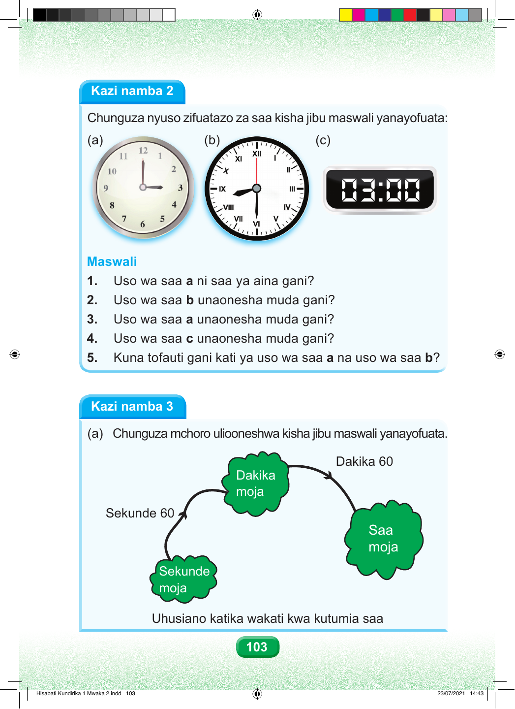

Kazi namba 2 Chunguza nyuso zifuatazo za saa kisha jibu maswali yanayofuata: (a) (b) (c) Maswali 1. Uso wa saa a ni saa ya aina gani? 2. Uso wa saa b unaonesha muda gani? 3. Uso wa saa a unaonesha muda gani? 4. Uso wa saa c unaonesha muda gani? 5. Kuna tofauti gani kati ya uso wa saa a na uso wa saa b? Kazi namba 3 (a) Chunguza mchoro uliooneshwa kisha jibu maswali yanayofuata. Dakika 60 Dakika moja Sekunde 60 Saa moja Sekunde moja Uhusiano katika wakati kwa kutumia saa 103 Hisabati Kundirika 1 Mwaka 2.indd 103 23/07/2021 14:43